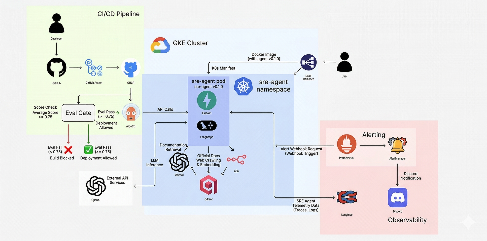

ArgoCD 및 Kubernetes 운영 장애를 자동 감지하고 분석하는 지능형 SRE 에이전트
Prometheus 지표 감지 시 에이전트가 자동 가동되어 분석 리포트를 Discord로 전송
n8n 파이프라인으로 매일 문서를 크롤링하여 비교 후 업데이트 존재 시, 지식 베이스(Qdrant)를 최신화
GitHub Actions CI에서 답변 품질을 자동 평가하여 점수 미달 시 배포를 차단
GCP GKE 인프라와 GitOps, RAG 파이프라인이 통합된 구조

CI 환경에 데이터가 없어 검색이 실패하던 문제를 Qdrant Sidecar 서비스 추가 및 평가 직전 데이터 자동 주입 스크립트 실행으로 해결
초기 배포 시 Qdrant 데이터가 없는 문제를 해결하기 위해 포트 포워딩을 통한 Golden Set 기반 초기 지식 수동 시딩 수행
Prometheus Operator의 ruleSelector 레이블 매칭 문제로 확인되어, PrometheusRule 메타데이터에 적절한 레이블을 추가하여 해결
수동 수정한 Secret이 Git 상태로 강제 동기화되는 문제를 GitHub Actions 파이프라인 배포 혹은 Auto-Sync 일시 비활성화로 해결
계정 리전 불일치 혹은 시크릿 업데이트 실패 문제를 정확한 리전 주소 확인 및 K8s Secret 재생성 후 롤아웃 재시작으로 해결
단발성 이벤트 필터링을 위한 'for: 1m' 설계 의도를 파악하고, 테스트 시 관찰 시간을 충분히 확보하여 정상 작동 확인